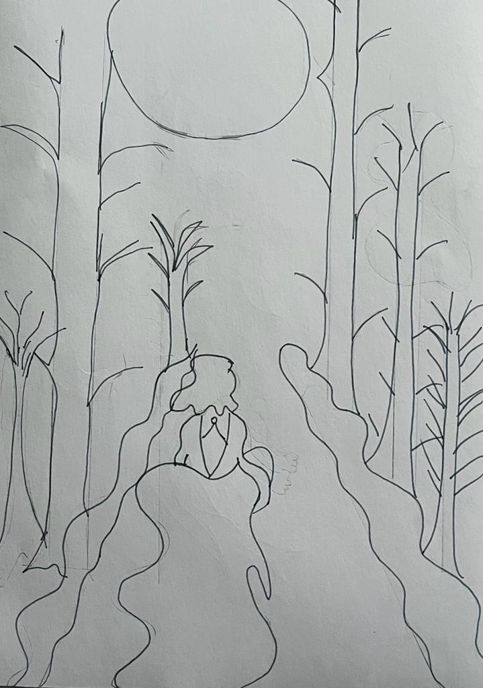
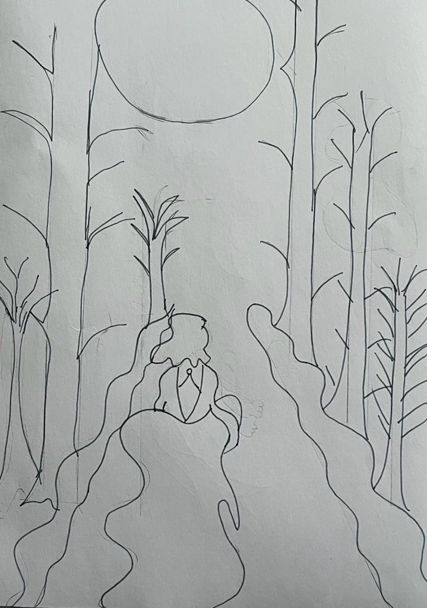

Composition Poster
 

The composition poster was another project for my Graphic Design class. For my poster, I created a whimsical design of a woman running away in a forest. For the poster design I used a forest background, the image of moon as well as smoke to make my design stand out. I used photoshop to remove the background image of the woman running away as well as to remove the moon and the smoke. I reduced the brightness of both the smoke and the moon to create depth in my design. I also used blue and black colors to add contrast and highlight the images.